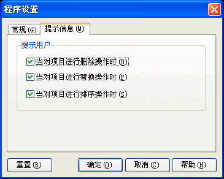

您可以通过选取程序选项菜单下的"程序设置..."并选取"提示信息"跳格看到这个对话框。关于这个对话框的使用请看下面的具体描述.

提示信息对话框用来设置什么情况下程序必须要先提示用户然后才能继续操作，比如在进行删除操作的时候。如果您已经对程序非常熟悉又不希望在进行某些操作时总被询问，也可以在这里取消这些设置。
想要恢复程序默认设置的时候，直接按"重置"按钮就可以。
当对项目进行删除操作时:
选中这个选项，则当对目录、索引项目进行删除操作前，Easy CHM将先提示并询问是否继续.
在您对程序使用还不熟悉的情况下，我们建议您选中 当对项目进行删除操作时，因为这将避免误删除.
当对项目进行替换操作时:
选中这个选项，则当对目录、索引项目进行替换操作前，Easy CHM将先提示并询问是否继续.
在您对程序使用还不熟悉的情况下，我们建议您选中 当对项目进行替换操作时，因为这将避免在您误操作的时候导致目录、索引项目被替换.
当对项目进行排序操作时:
选中这个选项，则当对目录、索引项目进行排序操作前，Easy CHM将先提示并询问是否继续.
在您对程序使用还不熟悉的情况下，我们建议您选中 当对项目进行排序操作时，因为这将避免在您误操作的时候导致目录、索引项目被排序.
参见:
| 版权所有 © 2000-2007 国华软件 保留全部权利. |